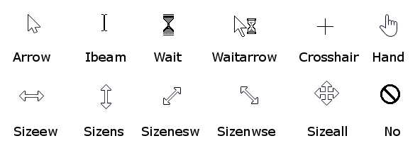

| Available since LÖVE 0.9.0 |
| This enum is not supported in earlier versions. |
Types of hardware cursors.

|
Not all cursor types are available on all operating systems. If an unsupported type is used, it will default to something else. |
Constants
- image
- The cursor is using a custom image.
- arrow
- An arrow pointer.
- ibeam
- An I-beam, normally used when mousing over editable or selectable text.
- wait
- Wait graphic.
- waitarrow
- Small wait cursor with an arrow pointer.
- crosshair
- Crosshair symbol.
- sizenwse
- Double arrow pointing to the top-left and bottom-right.
- sizenesw
- Double arrow pointing to the top-right and bottom-left.
- sizewe
- Double arrow pointing left and right.
- sizens
- Double arrow pointing up and down.
- sizeall
- Four-pointed arrow pointing up, down, left, and right.
- no
- Slashed circle or crossbones.
- hand
- Hand symbol.
Notes
